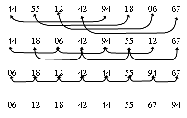

|
|
|
Алгоритм сортировки Шелла является усовершенствованием алгоритма сортировки включениями. Быстродействие алгоритма Шелла по сравнению с методом вставок обеспечивается за счет того, что при погружении элементы перемещаются сразу на большое расстояние. Сортировка происходит за несколько этапов. На первом этапе элементы, отстоящие друг от друга на расстоянии h, объединяются в группу. Таким образом, образуется n/h групп. В каждой группе производится сортировка вставками.
 Таким образом в файле образуется совокупность отсортированных подфайлов, то есть файл h - упорядочен. На следующем этапе расстояние h уменьшается и вновь повторяется h -сортировка подфайлов. Она выполняется быстрее, поскольку в результате предыдущего этапа файл уже частично отсортирован. Таким образом последовательно выполняются h - сортировки с уменьшающимся шагом. На последнем этапе h=1, но файл уже почти отсортирован и число перемещений на этом этапе будет значительно меньше по сравнению с обычным методом вставок. Немаловажным вопросом является выбор расстояний h1, h2, h3, … ,ht при условии ht=1 и hi+1< hi. Сортировка с hi+1= hi / 2 … ... 4, 2, 1 дает плохие результаты, поскольку на всех этапах, за исключением последнего, элементы на нечетных позициях не сравниваются с элементами на четных позициях. Для случайных файлов эффективность резко снижается и приближается к О(n2). Это происходит, например, если половина элементов с меньшими значениями находится на четных позициях, а другая половина с большими значениями – на нечетных позициях. В общем, вопрос нахождения хорошей последовательности шагов теоретически не решен. На практике используются убывающие последовательности шагов, близкие к геометрической прогрессии. Выбор хорошей последовательности дает выигрыш в быстродействии до 25%. В результате исследования этой проблемы Кнут [7] предложил следующую последовательность расстояний: 1 4 13 40 121 364 1093 3280 9841 . . . Т.е., расстояния находятся в соотношении 1/3 при hk-1=3 *hk, ht=1 и число h - сортировок t = log3 n -1. Анализ эффективности сортировки Шелла показал, что алгоритм имеет показатель эффективности О(n3/2). Shell_Sort ( A [ 1 .. n] )
1.
2. h ←1 3. while h ≤ ( n -1)/9 4. do h ←3h+1 5. while h > 0 6. do for i ← h to n 7. do j ← i 8. temp ← A [i] 9. while j ≥ h and temp < A [j-h] 10. do A[ j] ← A [j-h] 11. j ← j - h 12. A [j] ← temp 13. h ← h/3 Есть другая последовательность шагов, дающая хорошую эффективность: 1 8 23 77 281 1073 4193 16577 . . . Шаг вычисляется по формуле 4i+1+3*2i+1, i ≥ 0, где i - номер в последовательности. Эта последовательность обеспечивает хорошую эффективность для самых трудных случаев сортировки - О(n4/3). Приведенные последовательности эффективны в силу того, что элементы взаимно просты. |
|
|